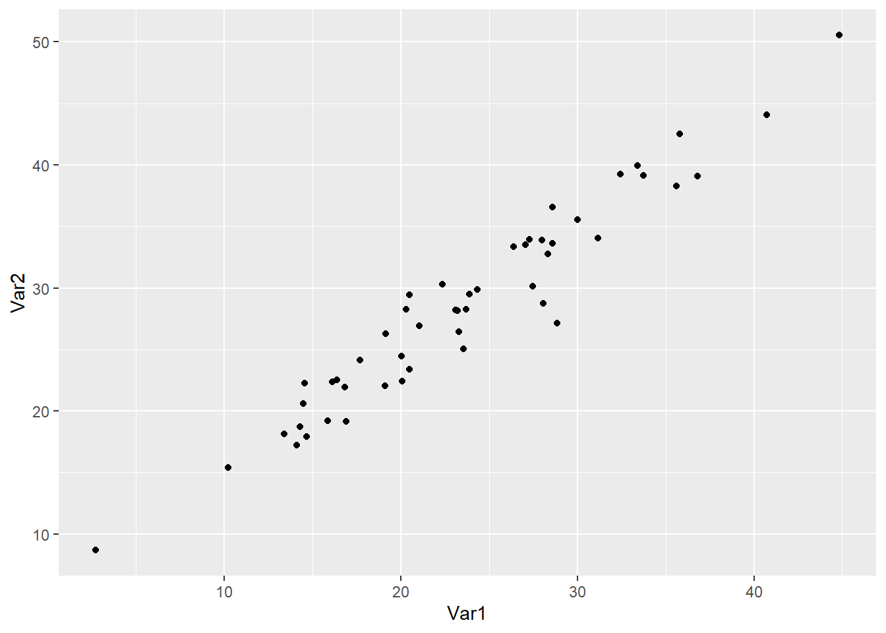
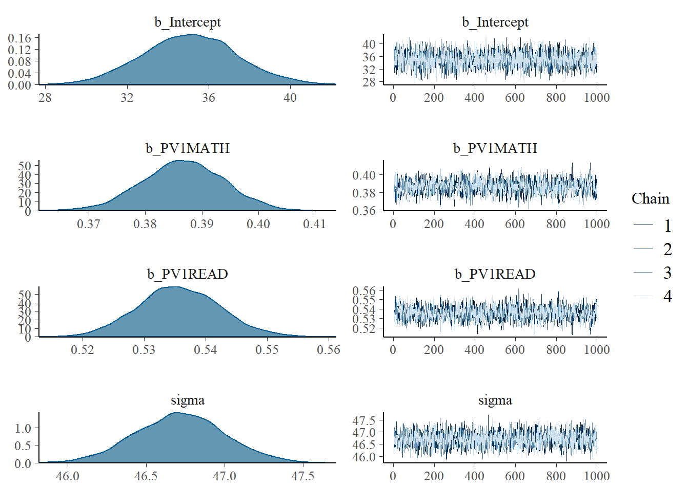

The statistical methods you have encountered to this point, the t-tests, chi-squared tests and linear models, are examples of an approach to statistics labelled frequentist statistics. Typically these methods report p-values which indicate the probability, assuming that the null hypothesis is true, of obtaining similar or more extreme results. Frequentist methods calculate the probability of the occurrence of events based on the outcome of many trials.
However, frequentist statistics, because of the way the outcomes of tests are presented, can be hard to interpret. Consider the case of two sets of exam results for class A and B which are taught by different methods. We wish to determine if there is a statistically significant difference in means, to see if one approach to teaching is better than the other, so we perform a t-test.
Welch Two Sample t-test
data: ClassA and ClassB
t = -4.6276, df = 19.013, p-value = 0.0001833
alternative hypothesis: true difference in means is not equal to 0
95 percent confidence interval:
-42.67437 -16.09486
sample estimates:
mean of x mean of y
50.84615 80.23077
In this case, the p-value of the frequentist t-test is 0.0002, less than 0.05. We conclude that, if we assume the null hypothesis (that the means of the classes are the same), there is a probability of 0.0002 (1 in 5000) than results like this, or more extreme, could have arisen by chance.
The p-value here can be thought of as indicating the probability of a false positive. That is, it reports the probability that a difference in means of this size or larger could have arise by chance.
The trouble with the frequentist p-value is that is doesn’t tell us what we typically want to know - what is the probability that the scores in the condition group are different from the control (and hence there is a difference in the teaching approaches). The Frequentist approach reports, after a number of trials, the limit of the relative frequency of an event. For example, after 13 students in each class have sat the test, and assuming that the two classes have the same mean score, there is a 1 in 5000 chance that the results like this, or more extreme, would occur. This is not an intuitive approach to reporting probability - the Bayesian approach offers an alternative.
0.2 The Bayesian Approach to Statistics
The Bayesian approach was developed by the English statistician and Presbyterian minister, Thomas Bayes. The Bayesian approach adopts proposes a different model to expressing the outcome of statistical tests. Bayesian statistics report a probability which expresses a degree of belief an event. Central to Bayesian statistics is the assumption that the degree of belief should be revised based on prior knowledge.
“’The key ideas of Bayesian statistics: that probability is orderly opinion, and that inference from data is nothing other than the revision of such opinion in the light of relevant new information” - (edwards1963?)
Bayes’ theorem can be stated mathematically as:\(P(A\vert B)=\frac{P(B \vert A)P(A)}{P(B)}, \text{ if } P(B) \neq 0\)
A and B represent two events. \(P(A)\) represents the probability of A occurring and \(P(A)\) the probability of B happening. The formula assumes that \(P(B)\ne0\), that is there is some probability the event B will happen.
\(P(A\vert B)\) is a conditional probability - that is, the probability that A will occur given that B has occurred.
\(P(B\vert A)\) is another conditional probability - this time, the probability that B will occur given that A has occurred.
We can see how the formula works in an example:
Imagine that the prevalence of students who have profound and multiple learning difficulties (PMLD) in state secondary schools in the UK is 1%. We might also know that the screening process for PMLD gives a false positive (i.e. incorrectly categorises a student with no learning difficulties with PMLD) 5% of the time.
A student receives a diagnosis of PMLD - what is the probability that they have PMLD?
We can use the formula to find the probability that the student has PMLD, given that they have a positive test \(P(HasPMLD\vert PositiveTest)\). But let us first consider the calculation intuitively.
If we select 1000 people at random for PMLD testing, 10 will have PMLD. 990 students will not have PMLD. Of those 990 people, 5% will receive a positive screening. 5% of 990 is 49.5 people. So there are 10 (correct screenings) + 49.5 (false positives) = 59.5 people who test positive. The probability that someone has PMLD, given a positive test is \(P(HasPMLD\vert PositiveTest)\) is \(10/59.5=0.17\) surprisingly low.
The example indicates the value of taking prior information into account when making inferences. Intuitively, it might be expected that, with the low rate of false positives (5%) a positive test would mean a high certainty of diagnosis. However, combined with knowledge of the prevalence of PMLD in the population, the probability of having PSMLD after a positive test is only around 1 in 5.
0.2.1 The Bayesian t-test
The BayesFactor package can be used to perform a Bayesian version of the t-test.
library(BayesFactor)# Create two dummy class exam scores, as dataframes this time, as that is what the Bayesian t-test taskes as an inputClassA <-data.frame(Scores =c(54,53,72,31,25,34,87,45,26,42,54,58,80))ClassB <-data.frame(Scores =c(82,94,88,76,82,60,88,90,75,77,96,61,74))# Label the classes A and BClassA <- ClassA %>%mutate(Class="A")ClassB <- ClassB %>%mutate(Class="B")# Combine into one data frameTotaldata <-rbind(ClassA, ClassB)# Perform the Bayesian testttestBF(data = Totaldata, formula = Scores ~ Class)
The value of interest here is the Bayes factor, 194.1877, followed by the confidence interval ±0%.The Bayes factor can be thought of as a measure of the relative likelihood of a difference (in this case, a different in scores between the groups). here the factor can be interpreted to mean: It is 194 times more likely that there is a difference between the two classes than there is no difference.
By comparison with a p-value, which acts only as a cut of for significance, the Bayes facor tells you the relative likelihood, a more useful piece of information.
(Note that to calculate the Bayesian t-test, some assumptions have to be made. One is the assumption of a distribution of effect sizes, in this case a kind of distribution known as a Cauchy distribution is assumed, r=0.707 refers to a parameter of that distribution).
Null, mu1-mu2 = 0 tells us that the null hypothesis is that the means (the mus) of the two groups are the same.
0.2.2 The Bayesian chi-square test
# Create two a dataframe 1=has degree, 0=has no degreeDegreeGender <-data.frame(Gender =c("Male","Male","Female","Male","Female","Female","Female","Male","Male","Female","Male","Female","Female","Male"),Degree =c(1,0,1,1,0,0,0,1,0,0,1,0,1,0))# Create a contingency tableconttab <-xtabs(data = DegreeGender, ~ Degree + Gender)# Perform the Bayesian chi-square testcontingencyTableBF(conttab, sampleType ="jointMulti")
# For comparison, perform the frequentist Chi square testchisq.test(conttab)
Pearson's Chi-squared test with Yates' continuity correction
data: conttab
X-squared = 0.29167, df = 1, p-value = 0.5892
The outcome of the chi-square test, gives a Bayes factor of 1.351891. This value raises the question of how to interpret different values of Bayes factors. (kass1995?) have suggested these labels for interpreting Bayes factors:
Bayes Factor
Strength of evidence
<1
There is no difference.
=1
Presence or absence of a difference is equally likely
1 to 3.2
Not worth more than a bare mention
3.2-10
Substantial
10-100
Strong
>100
Decisive
In the case of the chi-square test above, the Bayes factor of 1.351891 falls into the category of ‘Not worth more than a bare mention’. This coheres with the frequentist chi-square result, p-value = 0.5892, which is interpreted as implying, given the null hypothesis, there are no statistically significant differences between the two groups.
0.2.3 The Bayesian linear model
We covered linear models in an earlier sessions using the lm function - there is an alternative Bayesian version, in the
# Load the package to perform the Bayesian linear modellibrary(brms)# BRM is not the quickest Bayesian lm function, but it allows the calculation of an R2 equivalent which is really helpful# Create a dummy dataframe with a random normally distributed variable, Var 1. Then add a second random variable offset from the firsttestdata <-data.frame(Var1 =rnorm(50, mean=25, sd=10))testdata <- testdata %>%mutate(Var2 = Var1 +rnorm(50, mean=5, sd=2))# Plot the dataggplot(data=testdata, aes(x=Var1, y=Var2)) +geom_point()

# Perform the frequentist linear modelmod <-lm(data=testdata, Var1 ~ Var2)summary(mod)
Call:
lm(formula = Var1 ~ Var2, data = testdata)
Residuals:
Min 1Q Median 3Q Max
-4.6500 -1.0653 -0.0951 1.6139 3.3329
Coefficients:
Estimate Std. Error t value Pr(>|t|)
(Intercept) -3.8734 0.7972 -4.859 1.3e-05 ***
Var2 0.9524 0.0229 41.586 < 2e-16 ***
---
Signif. codes: 0 '***' 0.001 '**' 0.01 '*' 0.05 '.' 0.1 ' ' 1
Residual standard error: 1.804 on 48 degrees of freedom
Multiple R-squared: 0.973, Adjusted R-squared: 0.9724
F-statistic: 1729 on 1 and 48 DF, p-value: < 2.2e-16
# Perform the Bayesian linear modelmod <-brm(data=testdata, Var1 ~ Var2)
Family: gaussian
Links: mu = identity; sigma = identity
Formula: Var1 ~ Var2
Data: testdata (Number of observations: 50)
Draws: 4 chains, each with iter = 2000; warmup = 1000; thin = 1;
total post-warmup draws = 4000
Population-Level Effects:
Estimate Est.Error l-95% CI u-95% CI Rhat Bulk_ESS Tail_ESS
Intercept -3.87 0.84 -5.50 -2.23 1.00 3981 2708
Var2 0.95 0.02 0.90 1.00 1.00 3979 2675
Family Specific Parameters:
Estimate Est.Error l-95% CI u-95% CI Rhat Bulk_ESS Tail_ESS
sigma 1.85 0.20 1.52 2.28 1.00 3770 2935
Draws were sampled using sampling(NUTS). For each parameter, Bulk_ESS
and Tail_ESS are effective sample size measures, and Rhat is the potential
scale reduction factor on split chains (at convergence, Rhat = 1).
# Calculate the Bayesian equivalent of R2bayes_R2(mod)
# The R2 for the model is 0.97 so 97% of the variance is explained
0.2.4 Using prior data in a Bayesian linear model
A central principle of Bayesian statistics is that a model is based on knowledge of prior outcomes. The Bayesian Regression Model function brm in the brms package extends the lm function by allowing us to provide a prior model of the independent variable. We do this by passing the mean and standard deviation of our independent variable to the set_prior function (we also specify the shape of the distribution, in our case, normal, and specify the name of our independent variable (PV1MATH)).
# To predict 2018 PISA data, I am going to use prior information from the 2015 results#PISA2015studentbayes <- read_parquet("/Users/k1765032/Library/CloudStorage/GoogleDrive-richardandrewbrock@gmail.com/.shortcut-targets-by-id/1c3CkaEBOICzepArDfjQUP34W2BYhFjM4/PISR/Data/PISA/2015/PISA2015studentbayes.parquet")# PISA_2015 <- read_parquet(glue("{datafolder}/PISA_2015_student_subset.parquet"))# Find the prior distribution of UK mathematics scores we expect from previous years PISA_2015 %>%select(PV1MATH, CNT) %>%filter(CNT =="United Kingdom") %>%summarise(mean =mean(PV1MATH, na.rm=TRUE), sd =sd(PV1MATH, na.rm=TRUE))
# A tibble: 1 × 2
mean sd
<dbl> <dbl>
1 489. 87.8
library(brms)# Specify the prior distribution using set_prior from the `BMS` packageprior2015 <-c(set_prior("normal(489, 87.8)", class ="b", coef ="PV1MATH"))# Create the data frame of UK scores in 2018 to modelUKPISA_2018 <- PISA_2018 %>%filter(CNT=="United Kingdom")# Use the Bayesian regression model function 'brm' to fir the model, specifying the priormodbay <-brm(data=UKPISA_2018, formula = PV1SCIE ~ PV1MATH, prior=prior2015)
Family: gaussian
Links: mu = identity; sigma = identity
Formula: PV1SCIE ~ PV1MATH
Data: UKPISA_2018 (Number of observations: 13818)
Draws: 4 chains, each with iter = 2000; warmup = 1000; thin = 1;
total post-warmup draws = 4000
Population-Level Effects:
Estimate Est.Error l-95% CI u-95% CI Rhat Bulk_ESS Tail_ESS
Intercept 76.92 2.70 71.69 82.12 1.00 4034 3225
PV1MATH 0.84 0.01 0.83 0.85 1.00 4152 3050
Family Specific Parameters:
Estimate Est.Error l-95% CI u-95% CI Rhat Bulk_ESS Tail_ESS
sigma 57.02 0.34 56.37 57.70 1.00 3713 2776
Draws were sampled using sampling(NUTS). For each parameter, Bulk_ESS
and Tail_ESS are effective sample size measures, and Rhat is the potential
scale reduction factor on split chains (at convergence, Rhat = 1).
# Compare to the simple linear modelmod <-lm(data = UKPISA_2018, formula = PV1SCIE ~ PV1MATH)summary(mod)
Call:
lm(formula = PV1SCIE ~ PV1MATH, data = UKPISA_2018)
Residuals:
Min 1Q Median 3Q Max
-280.564 -36.100 0.702 36.408 240.894
Coefficients:
Estimate Std. Error t value Pr(>|t|)
(Intercept) 76.943905 2.725385 28.23 <2e-16 ***
PV1MATH 0.842087 0.005399 155.97 <2e-16 ***
---
Signif. codes: 0 '***' 0.001 '**' 0.01 '*' 0.05 '.' 0.1 ' ' 1
Residual standard error: 57.03 on 13816 degrees of freedom
Multiple R-squared: 0.6378, Adjusted R-squared: 0.6378
F-statistic: 2.433e+04 on 1 and 13816 DF, p-value: < 2.2e-16
Notice we get fairly similar models from the linear and Bayesian model
Another useful feature of Bayesian models is that the model parameters, e.g. the intercept and coefficient, are not represent only as single values, but as distributions. This gives greater insight into the fit of the model
# What's nice with a Bayesian model is our model parameters are not simply values, but probability distributions which gives more insight into the confidence in the model# For example, lets predict science scores based on mathematics scores and reading scores# Find the prior distribution of UK mathematics scores we expect from previous years PISA_2015 %>%select(PV1MATH,CNT) %>%filter(CNT =="United Kingdom") %>%summarise(mean =mean(PV1MATH, na.rm=TRUE), sd =sd(PV1MATH, na.rm=TRUE))
# Specify the prior distribution using set priors from the `BMS` packageprior2015 <-c(set_prior("normal(489, 87.8)", class ="b", coef ="PV1MATH"),set_prior("normal(496, 92.7)", class ="b", coef ="PV1READ"))# Create the data frame of UK scores in 2018 to modelUKPISA_2018 <- PISA_2018 %>%filter(CNT=="United Kingdom")# Use the Bayesian regression model function 'brm' to fir the model, specifying the priormodbay <-brm(data = UKPISA_2018, formula = PV1SCIE ~ PV1MATH + PV1READ, prior=prior2015)
# Plot the distribution of the coefficientsplot(modbay)

0.2.5 Generating multiple models and comparing them
The BayesFactor package allows you to generate multiple models, based on different combinations of variables in a data set and compare their predictive power. Note that this approach is not seen as a recommended approach:
Note
“Let the computer find out” is a poor strategy and usually reflects the fact that the researcher didnot bother to think clearly about the problem of interest and its scientific setting (burnham2007?)
Nonetheless, once you have thought clearly about a range of models ranking the potential Bayesian models can provide insights. This can be done using the regressionBF function of the BayesFactor package. We call models <- regressionBF(PV1SCIE ~ ., data = PISAUK) which asks for regression to predict science scores (PV1SCIE~) by all of the variables (.) in the data frame (data=PISAUK) Note that variables need to be converted to factor variables. The function returns a data.frame ranking the models, the one with the highest Bayes factor bf is a candidate for the best fit.
# Create a UK subsetPISAUK <- PISA_2018 %>%select(PV1MATH, PV1READ, PV1SCIE, WEALTH, ESCS, CNT) %>%filter(CNT=="United Kingdom") %>%select(-CNT) %>%na.omit()# Convert variables to factors# PISAUK$WEALTH <- as.factor(PISAUK$WEALTH)# PISAUK$PV1SCIE <- as.factor(PISAUK$PV1SCIE)# PISAUK$PV1READ <- as.factor(PISAUK$PV1READ)# PISAUK$ESCS <- as.factor(PISAUK$ESCS)# Use regressionBF to create a dataframe of the modelsmodels <-regressionBF(PV1SCIE ~ ., data = PISAUK)# Select only the relevant part of the outputoutput <-as.data.frame(models@bayesFactor)# Arrange the outputoutput <- output %>%arrange(desc(bf))output
Use a Bayesian chi square test to determine: a) In the PISA 2018 data, determine if there are statistically significant differences for boys and girls for ST011Q03TA (In your home: A quiet place to study)
For the UK, US, France and Germany, determine if they are statistically significant differences in ST011Q04TA In your home: A computer you can use for school work
::: callout hint
When analyzing by country, after filtering for the countries of interest, it can be helpful to drop_levels(<dataframe>). After filtering the other countries in the dataframe will remain as levels, and will create a contingency table with many zero entries if not dropped. For example:
# Create a data frame for having a desk to study at in the UK and the USDesk <- PISA_2018 %>%select(CNT, ST011Q01TA) %>%filter(CNT =="United Kingdom"| CNT =="United States")# Create a contingency tableconttab <-xtabs(data = Desk, ~ CNT + ST011Q01TA)conttab
ST011Q01TA
CNT Yes No Valid Skip Not Applicable Invalid
Albania 0 0 0 0 0
United Arab Emirates 0 0 0 0 0
ST011Q01TA
CNT No Response
Albania 0
United Arab Emirates 0
[ reached getOption("max.print") -- omitted 80 rows ]
Adding drop_levels solves this issues
# Create a data frame for having a desk to study at in the UK and the USDesk <- PISA_2018 %>%select(CNT, ST011Q01TA) %>%filter(CNT=="United Kingdom"| CNT=="United States")# Remove levels with 0 responsesDesk <-droplevels(Desk)# Create a contingency tableconttab <-xtabs(data=Desk, ~ CNT + ST011Q01TA)conttab
ST011Q01TA
CNT Yes No
United Kingdom 11696 1508
United States 3712 1036
:::
Answer A
# Create a dataframe for having a quiet room in the UKQuiroom <- PISA_2018 %>%select(CNT, ST004D01T, ST011Q03TA) %>%filter(CNT=="United Kingdom")# Create a contingency tableconttab <-xtabs(data=Quiroom, ~ ST004D01T + ST011Q03TA)# Perform the Bayesian chi-square testcontingencyTableBF(conttab, sampleType ="jointMulti")
# Returns a base factor of 2.01724e-64 - highly unlikely there is a difference by gender in having a quiet room
Answer B
# Create a dataframe for having a computer in the UK, US, France and GermanyComp <- PISA_2018 %>%select(CNT, ST011Q04TA) %>%filter(CNT=="United Kingdom"|CNT=="United States"| CNT=="Germany"| CNT=="France")# The other countries are included as levels so drop these:Comp <-droplevels(Comp)# Create a contingency tableconttab<-xtabs(data=Comp, ~ CNT + ST011Q04TA)# Perform the Bayesian chi-square testcontingencyTableBF(conttab, sampleType ="jointMulti")# Returns a base factor of 1.871984e+14 - highly likely there is a difference by country in having a computer
0.3.2 Task 2 Bayesian t-tests
Use a Bayesian t-test to determine: a) In the PISA 2018 data, are statistically significant differences in reading scores (PV1READ) for boys and girls (look at ST004D01T for gender) in the UK?
Answer
# Create a data frame for having a Reading scores in the UK including genderRead <- PISA_2018 %>%select(CNT, ST004D01T, PV1READ) %>%filter(CNT =="United Kingdom")# Perform the Bayesian testttestBF(data=Read, formula= PV1READ ~ ST004D01T)# The Bayes factor is 8.194083e+39 - it is highly likely that are differences between the genders in reading in the UK
Use a Bayesian t-test to determine: In the PISA 2018 data, are statistically significant differences in mathematics scores (PV1MATH) between the UK and the US?
Answer
# Create a data frame for having a mathematics scores in the UK and US PISAMath <- PISA_2018 %>%select(CNT, PV1MATH) %>%filter(CNT=="United Kingdom"| CNT=="United States")# Drop levels of other countriesPISAMath <-droplevels(PISAMath)# Perform the Bayesian testttestBF(data=PISAMath, formula = PV1MATH ~ CNT)# The Bayes factor is 9.628524e+50 - it is highly likely that there is a difference in mean mathematics scores between the US and UK
0.3.3 Task 3 Bayesian linear models
Use a Bayesian linear model to determine: a) In the PISA 2018 data, build a model of mathematics scores (PV1MATH) in the UK. What percentage of variance in mathematics score is explained by the model: PV1MATH \~ PV1READ + ST004D01T (gender) + WEALTH
Answer
# Create a data frame for having a Reading scores in the UK including genderUKMath <- PISA_2018 %>%select(CNT, ST004D01T, PV1MATH, WEALTH, PV1READ) %>%filter(CNT=="United Kingdom")# Perform the Bayesian linear modelmod <-brm(data=UKMath, PV1MATH ~ PV1READ + ST004D01T + WEALTH)summary(mod)# Calculate the Bayesian equivalent of R2bayes_R2(mod)# The model explains 64% of the variance
Use a Bayesian linear model to build the best model you can of the difference between boys and girls mathematics scores in the whole day set. a) Create a dataframe of boys and girls mathematics achievement across the world using summarise b) Use mutate to a difference in score column c) Propose a model (consider e.g., PV1READ, WEALTH etc), calculate the R2 value, and then tune the model by adding additional independent variable to increase its R2
If you aren’t feeling confident with your R data manipulation, you can use the hint below to start with a dataframe of gender difference and various variables by country.
Hint
# Creating the data frame for analysis# Create a data frame for having a mathematics scores by genderMathScore <- PISA_2018 %>%select(CNT, ST004D01T, PV1MATH) %>%group_by(CNT, ST004D01T) %>%summarise(math=mean(PV1MATH)) %>%na.omit()# Use pviot_wider to create side-by-sde columns for mathematics scoreMathScore <-pivot_wider(data=MathScore, names_from=ST004D01T, values_from=math)MathScore <- MathScore %>%mutate(genddiff = Female - Male)# Create a summary of means of the indepedent variables (e.g. WEALTH, reading etc) by countryIndependents <- PISA_2018 %>%select(CNT, PV1READ, WEALTH, ESCS) %>%group_by(CNT) %>%summarise(read=mean(PV1READ, na.rm=TRUE), wealth=mean(WEALTH, na.rm=TRUE),ESCS=mean(ESCS, na.rm=TRUE)) %>%na.omit()# join the independents to the maths scores gender differencesMathScore<-left_join(MathScore, Independents, by="CNT")
Full Answer
# Create a data frame for having a mathematics scores by genderMathScore <- PISA_2018 %>%select(CNT, ST004D01T, PV1MATH) %>%group_by(CNT, ST004D01T) %>%summarise(math=mean(PV1MATH)) %>%na.omit()# Use pviot_wider to create side-by-sde columns for mathematics scoreMathScore <-pivot_wider(data=MathScore, names_from=ST004D01T, values_from=math)MathScore <- MathScore %>%mutate(genddiff = Female - Male)# Create a summary of means of the independent variables (e.g. WEALTH, reading etc) by countryIndependents <- PISA_2018 %>%select(CNT, PV1READ, WEALTH, ESCS) %>%group_by(CNT) %>%summarise(read=mean(PV1READ, na.rm=TRUE), wealth=mean(WEALTH, na.rm=TRUE),ESCS=mean(ESCS, na.rm=TRUE)) %>%na.omit()# join the independents to the maths scores gender differencesMathScore <-left_join(MathScore, Independents, by="CNT")# Perform the Bayesian linear model with reading alonemod<-brm(data = MathScore, genddiff ~ read)summary(mod)# Calculate the Bayesian equivalent of R2bayes_R2(mod)# The reading only model explains 8% of the variance# Perform the Bayesian linear model with reading and wealthmod<-brm(data=MathScore, genddiff ~ read + wealth)summary(mod)# Calculate the Bayesian equivalent of R2bayes_R2(mod)# The reading and wealth model explains 19% of the variance# Perform the Bayesian linear model with reading, wealth and ESCSmod <-brm(data=MathScore, genddiff ~ read + wealth + ESCS)summary(mod)# Calculate the Bayesian equivalent of R2bayes_R2(mod)# The reading, wealth and ESCS model explains 20% of the variance
0.3.4 Task 4 Bayesian linear models
Use a Bayesian linear model to determine: a) In the UK PISA 2018 data, build a model of mathematics scores (PV1MATH) in the US based on reading scores (PV1READ) and science scores (PV1SCIE). Using the 2015 dataset to provide prior distributions for reading and science scores. Plot the distribution of the model parameters
Answer
# Determine prior distribution parametersPISA_2015 %>%select(PV1SCIE, CNT) %>%filter(CNT=="United Kingdom") %>%summarise(mean=mean(PV1SCIE, na.rm=TRUE), sd=sd(PV1SCIE, na.rm=TRUE))PISA_2015 %>%select(PV1READ,CNT) %>%filter(CNT=="United Kingdom") %>%summarise(mean=mean(PV1READ, na.rm=TRUE), sd=sd(PV1READ, na.rm=TRUE))# Specify the prior distribution using set priors from the `BMS` packageprior2015 <-c(set_prior("normal(503.5, 96.6)", class ="b", coef ="PV1SCIE"),set_prior("normal(496, 92.7)", class ="b", coef ="PV1READ"))# Create the data frame of UK scores in 2018 to modelUKPISA_2018 <- PISA_2018 %>%filter(CNT=="United Kingdom")# Use the Bayesian regression model function 'brm' to fir the model, specifying the priormodbay <-brm(data=UKPISA_2018, formula = PV1MATH ~PV1SCIE+PV1READ, prior=prior2015)summary(modbay)bayes_R2(modbay)# Plot the distribution of the coefficientsplot(modbay)
0.3.5 Task 5 Bayesian comparison of models
Use the regressionBF function of the BayesFactor package to compare different models for the performance of UK students in mathematics. What is the best model you can find?
Answer
# Create a UK subsetPISAUK <- PISA_2018 %>%select(PV1MATH, PV1READ, PV1SCIE, WEALTH, ESCS, CNT) %>%filter(CNT =="United Kingdom")%>%select(-CNT) %>%na.omit()# Convert variables to factorsPISAUK$WEALTH <-as.factor(PISAUK$WEALTH)PISAUK$SCIE <-as.factor(PISAUK$SCIE)PISAUK$READ <-as.factor(PISAUK$READ)PISAUK$MATH <-as.factor(PISAUK$MATH)PISAUK$ESCS <-as.factor(PISAUK$ESCS)# Use regressionBF to create a dataframe of the modelsmodels<-regressionBF(PV1MATH ~ ., data = PISAUK)# Select only the relevant part of the outputoutput<-as.data.frame(models@bayesFactor)# Arrange the outputoutput<-output%>%arrange(desc(output$bf))output# The best model appears to be: PV1SCIE ~ PV1READ + PV1SCIE + WEALTH + ESCS